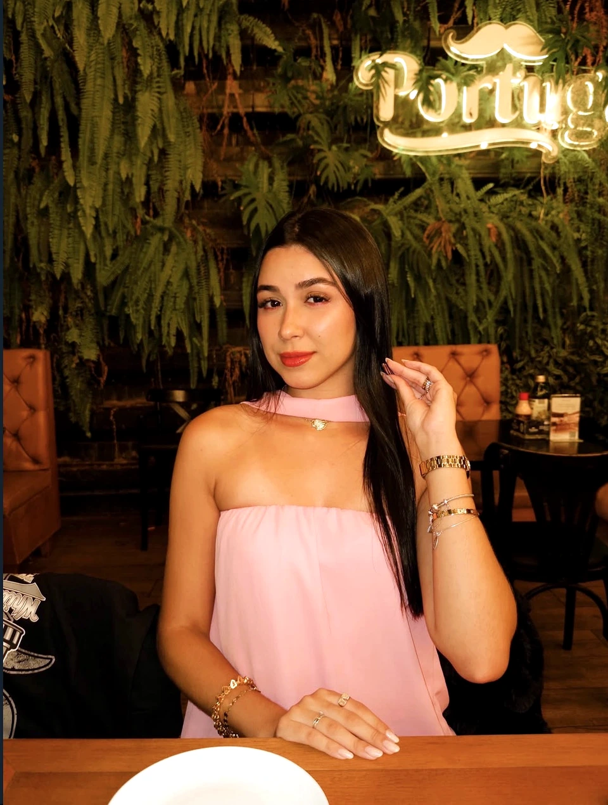
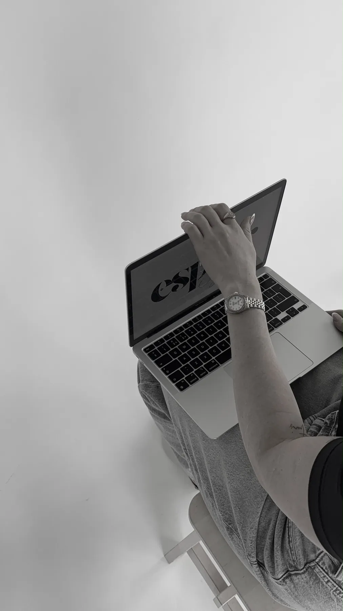
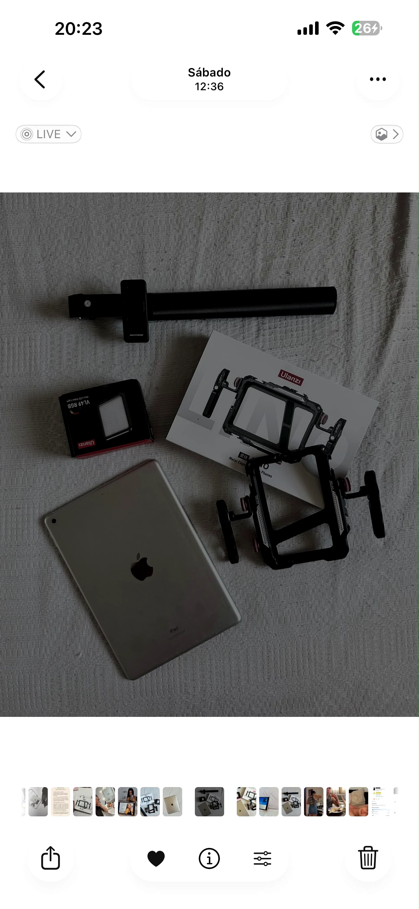
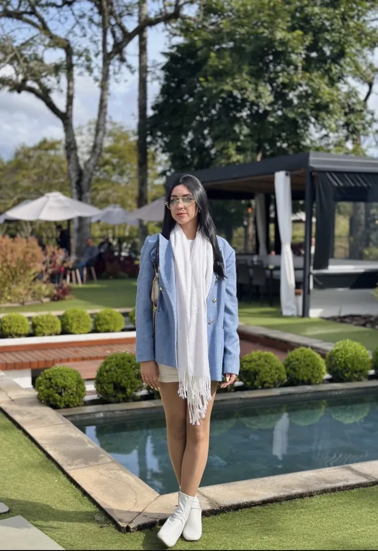

Informação que ganha ritmo, direção e linguagem de rede.
Conteúdo informativo pensado para explicar um tema com naturalidade, mantendo a profissional e a mensagem como protagonistas.

Transformo rotina, trabalho e experiência em vídeos que realmente representam a sua marca.
Ver trabalhos00 / IDEA
Seu trabalho já tem uma história. O conteúdo começa quando alguém sabe enxergá-la.
01 / SELECTED WORK
Conteúdo informativo pensado para explicar um tema com naturalidade, mantendo a profissional e a mensagem como protagonistas.
Na Festa de Paraibuna, o Rico Defumados levou sabor, tradição e aquele tipo de produto que chama atenção antes mesmo da primeira mordida.
“O One Day With registra tudo aquilo que você precisa, antes de acabar.”
ON SET / EQUIPMENT
O equipamento entra para sustentar a ideia — luz, estabilidade e mobilidade sem tirar a naturalidade da gravação.



02 / ISABELA
Sou criadora de conteúdo especializada em vídeos para redes sociais.
Meu trabalho une captação, direção e olhar estratégico para transformar a rotina e o trabalho de profissionais em conteúdos que valorizam a marca e aproximam o público.
03 / SERVICES
O foco é produção de conteúdo em vídeo e experiências de gravação — não gestão contínua de redes sociais.
Uma experiência de produção para transformar um período de gravação em vários conteúdos alinhados ao negócio.
Produções pontuais para campanhas, lançamentos, rotina, serviços, produtos e momentos específicos.
Criação de ideias e roteiros para dar clareza ao que precisa ser comunicado antes da gravação.
Direcionamento criativo e estratégico para que o conteúdo tenha intenção, naturalidade e identidade.
04 / THE EXPERIENCE
O One Day With nasceu para quem sabe que precisa aparecer nas redes, mas não tem tempo, organização ou direção para produzir conteúdo sozinho.
Profissionais autônomos, empreendedores e negócios de serviços — com forte afinidade com beleza, estética, saúde, fitness, gastronomia e experiências.
Jacareí, São José dos Campos, Vale do Paraíba e região. Produções em outras cidades mediante disponibilidade e orçamento.
De aproximadamente 1h30 até experiências mais completas, com maior volume de conteúdos, chegando a 3h30.
Planejamento, ideias e direcionamento, captação, organização dos conteúdos e edição. A entrega varia conforme o plano contratado.
Um bom vídeo começa antes da gravação: contexto, ideias e direção definem o que precisa ser captado.
A rotina, o ambiente e o conhecimento do profissional viram matéria-prima sem transformar o conteúdo em algo artificial.
O material gravado é organizado e editado para se transformar em conteúdo pronto para a linguagem das redes.
05 / THE PROCESS
Entendemos a necessidade e qual experiência do One Day With faz mais sentido para o negócio.
Definimos contexto, objetivos, ideias, direcionamento e o que precisa ser registrado.
A produção acontece de forma dirigida, buscando naturalidade e aproveitando a rotina real do profissional.
Os melhores momentos são organizados e transformados em conteúdos pensados para redes sociais.
O prazo é alinhado conforme o plano e o volume de conteúdos, preservando agilidade e qualidade.

Solicite um orçamento e descubra qual experiência faz mais sentido para o seu negócio.